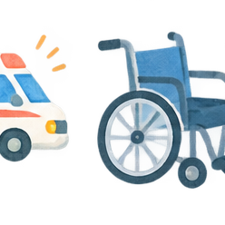

障害・発達について
「どんな支援があるのか分からない」段階から、
相談できます
発達や障害について気になること、日常生活、学校、仕事、福祉サービス。今困っていることから、相談先や利用できる支援を探せます。

こんなときに
気になることから選んでください
まず相談する
サービスを決めていなくても、障害福祉課などへ相談できます
諫早市障害福祉課では、身体・知的・精神障害のある方や障害児の福祉に関する手続き・相談を担当しています。発達障害については、長崎県発達障害者支援センター「しおさい」でも、本人・家族・関係機関からの相談を受けています。
「どの制度に当てはまるか分からない」「福祉サービスを使うべきか迷っている」という段階でも、まず困っている場面を伝えて相談できます。
発達について
子どもも大人も、「生活で困っていること」から相談できます
相談＝診断ではありません。
困りごとの整理、生活上の工夫、必要に応じた医療・福祉・就労などの支援先を一緒に考える入口として利用できます。
困りごとの整理、生活上の工夫、必要に応じた医療・福祉・就労などの支援先を一緒に考える入口として利用できます。
障害福祉サービス
サービス利用までの基本的な流れ
障害福祉サービスは、利用したいサービスや本人の状況によって手続きが異なります。介護給付などでは障害支援区分の認定が必要になる場合があります。
- 1相談する
市の障害福祉課や相談支援事業所などで、困っていることや希望を整理します。
- 2利用申請
必要なサービスが見えてきたら、市へ利用を申請します。
- 3必要な調査・確認
サービスによって、心身の状態や生活状況の調査、障害支援区分の認定などが行われます。
- 4利用計画を考える
本人の希望や生活状況を踏まえ、サービス等利用計画案などを作成します。
- 5支給決定
市がサービスの種類や支給量などを決定し、受給者証が交付されます。
- 6事業所と契約して利用開始
利用する事業所を選び、契約後にサービスを利用します。
すべての人が同じ手続きをたどるわけではありません。
障害支援区分が必要か、計画相談が必要かなどは利用するサービスによって異なるため、まず市や相談支援事業所で確認してください。
障害支援区分が必要か、計画相談が必要かなどは利用するサービスによって異なるため、まず市や相談支援事業所で確認してください。
子どもの支援
児童発達支援・放課後等デイサービスなど
子どもの発達や生活の状況に応じて、児童発達支援、放課後等デイサービス、保育所等訪問支援、障害児相談支援などの支援があります。諫早市では、障害福祉課が障害児に関する事務を担当しています。
毎日の生活
暮らし方に合わせた支援があります
対象となるサービスや利用条件は一人ひとり異なります。サービス名から決めるより、「何に困っているか」「どんな生活をしたいか」を相談時に伝えると整理しやすくなります。
仕事・就労
「働きたい」「自分に合う働き方を探したい」も相談できます
諫早市の「WORK・WORK（ワク・ワク）ナビ」では、ハローワーク、障害者就業・生活支援センター、発達障害者支援センター等の相談先と、就労選択支援、就労移行支援、就労継続支援A型・B型などの地域の事業所をまとめています。
WORK・WORKナビ
相談先から福祉就労まで、「働きたい」に合わせて地域の支援を探せます。
WORK・WORKナビを見る ↗WAM NET
就労移行、就労継続支援など、障害福祉サービス事業所を検索できます。
事業所を探す ↗しおさい
発達障害のある本人・家族の相談や、就労に関する関係機関との連携支援を行っています。
相談案内を見る ↗手帳・医療費など
手帳や制度について知りたい
障害者手帳
- 身体障害者手帳
- 療育手帳
- 精神障害者保健福祉手帳
対象や申請方法はそれぞれ異なります。
医療費の支援
自立支援医療など、対象となる医療や所得状況等に応じて負担を軽減する制度があります。
利用できる制度は障害の種類や状況によって異なるため、窓口で確認してください。
地域のサービスを探す
相談したあと、自分でも事業所や支援を探せます
障害福祉課
障害福祉サービス、障害児支援、手帳や各種制度などについて確認できます。
公式ページを見る ↗WAM NET
全国の障害福祉サービス等事業所を地域・サービス種別などから検索できます。
事業所を探す ↗長崎県「しおさい」
発達障害のある本人・家族・関係機関に対する相談・発達・就労等の支援を行っています。
公式ページを見る ↗次にできること
迷ったら、まず困っていることを一つ伝えてください
制度名やサービス名が分からなくても構いません。「外出が難しい」「仕事を続けたい」「子どもの学校生活が心配」など、生活の中で困っていることから相談できます。
情報源
諫早市・長崎県・厚生労働省などの公的情報を確認しています
- 諫早市「障害福祉課」
- 諫早市「障害児（者）の保健福祉」
- 諫早市「WORK・WORK（ワク・ワク）ナビ」
- 長崎県「発達障害者支援センター しおさい」
- 厚生労働省「サービスの利用手続き」
- WAM NET「障害福祉サービス等情報検索」
情報確認日：2026年10月4日